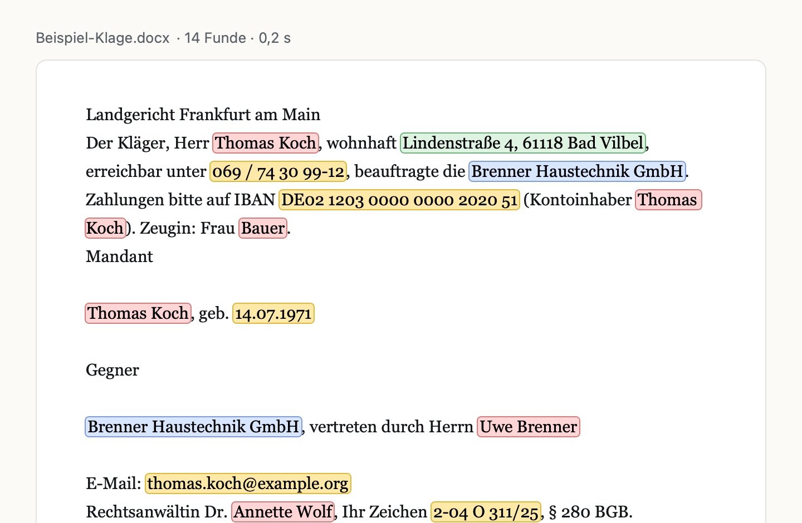
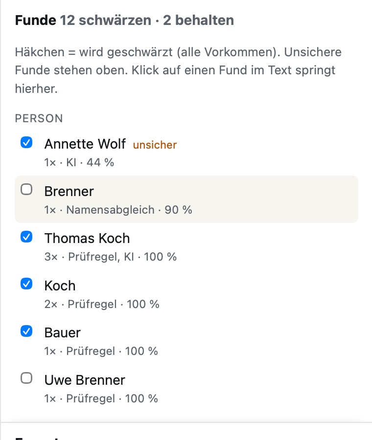
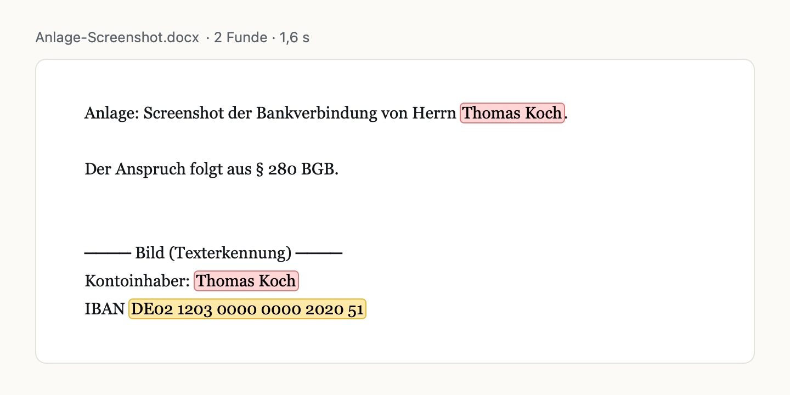
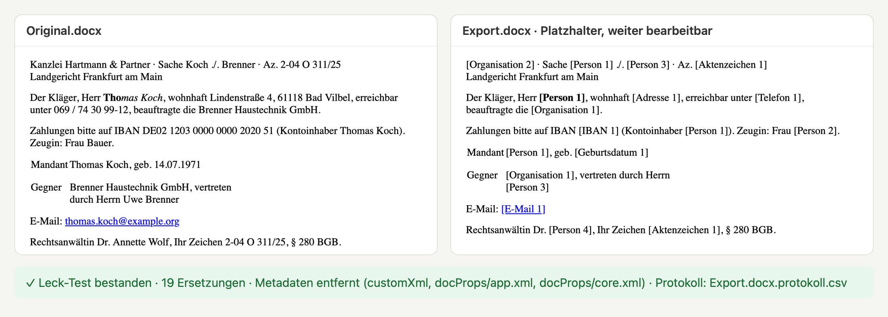
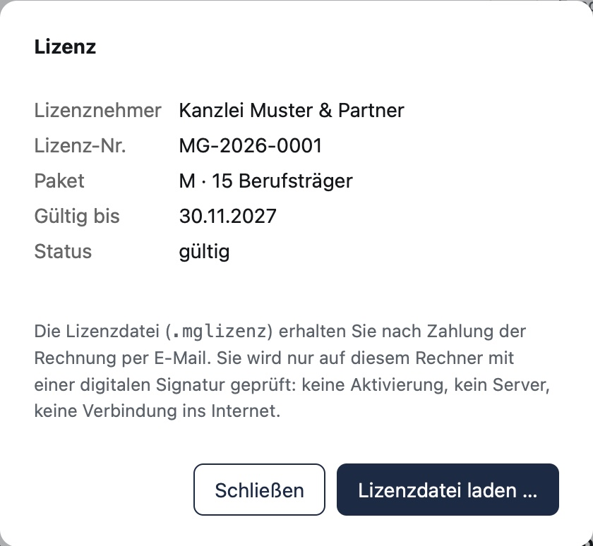
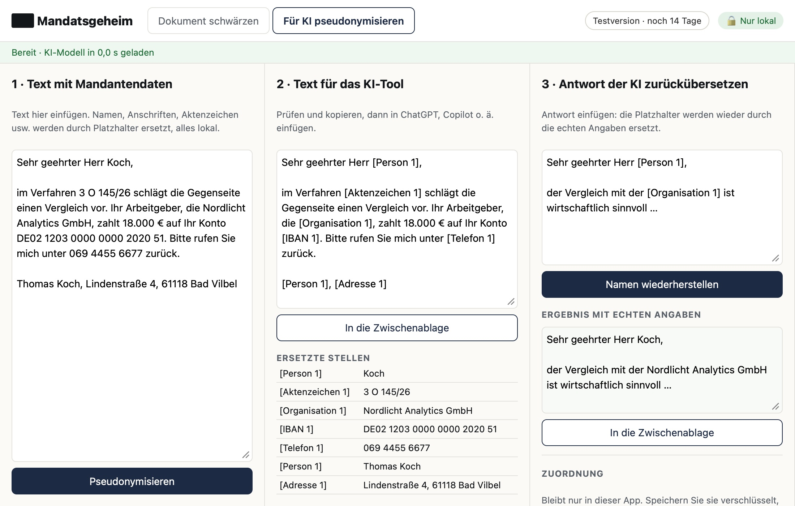

Funktionen
Alles, was Mandatsgeheim heute kann, mit Screenshots aus der App (Beispieldokumente sind fiktiv). Was noch geplant ist, steht unten getrennt.
Prüfen statt blind vertrauen
Das Dokument erscheint mit farbigen Markierungen: Personen rot, Organisationen blau, Anschriften grün, Kennungen gelb. Kopf- und Fußzeilen, Kommentare und Fußnoten stehen darunter, damit nichts übersehen wird.
Rechts die Funde, gruppiert nach Art, mit Anzahl, Quelle (Prüfregel, KI, Namensabgleich, Begriffsliste) und Sicherheit. Unsichere Funde stehen oben und sind markiert.


Eine Entscheidung, alle Vorkommen
Ein Häkchen entfernt, kein Häkchen lässt lesbar, und zwar für jedes Vorkommen im Dokument. Schreibweisen derselben Person („Thomas Koch“, „Koch“, „Herrn Koch“) werden erkannt und gemeinsam behandelt.
Fehlt etwas? Text mit der Maus markieren, auch Wortteile oder mehrere Wörter, und „Auswahl schwärzen“ klicken. Feste Begriffe (Projektnamen, Mandantennummern) tragen Sie einmal in die Begriffsliste ein.


Scans und Bilder
Gescannte Seiten, eingefügte Screenshots (z. B. einer E-Mail) und Bilder in Word-Dateien werden per Texterkennung gelesen. Treffer werden im Bild abgedeckt; das Bild bleibt im Dokument erhalten.
Die Texterkennung läuft lokal, auf dem Mac mit der Texterkennung des Betriebssystems.


Export: Platzhalter oder Balken, Original oder PDF
Platzhalter ersetzt Daten durch [Person 1], [Adresse 1] …, dieselbe Person erhält überall dieselbe Nummer, der Text bleibt verständlich. Balken ersetzt durch █████.
Ausgabe im Originalformat (DOCX bleibt bearbeitbar) oder als PDF, auch für Word- und Textdateien. Metadaten (Autor, Titel, Bearbeitungszeiten, Versionskennungen, Vorlagenpfad) werden entfernt; als Erstellerprogramm steht „Mandatsgeheim“ in der Datei.
Im PDF ist der Originaltext an geschwärzten Stellen nicht mehr vorhanden, nicht nur überdeckt. Aus einer PDF-Datei entsteht dabei ein neues PDF aus Seitenbildern: ohne Formularfelder, Anhänge, Lesezeichen und Metadaten des Originals. Der übrige Text ist danach nicht mehr markier- oder durchsuchbar; Platzhalter stehen als Text in den Feldern.


Leck-Test und Prüfprotokoll
Nach jedem Export liest Mandatsgeheim die fertige Datei erneut und sucht nach jedem entfernten Begriff, bei PDFs zusätzlich per Texterkennung auf jeder Seite mit Schwärzungen. So fällt auch ein Balken auf, der den Text nicht vollständig abdeckt. Findet es noch etwas, wird der Export blockiert.
Ein Protokoll (CSV) neben der Datei listet jede Schwärzung mit Fundstelle, Art, Ebene und Ersatz, plus Lizenznehmer und Datum. Es enthält die Originaldaten und bleibt deshalb in der Kanzlei.


Für KI pseudonymisieren und zurückübersetzen
Text einfügen, „Pseudonymisieren“: Namen, Anschriften, Kennungen werden zu Platzhaltern. Den Text nutzen Sie in ChatGPT, Copilot oder einem anderen Werkzeug. Die Antwort fügen Sie wieder ein, und die echten Namen kommen lokal zurück.
Die Zuordnung lässt sich verschlüsselt speichern (Argon2id-Schlüsselableitung, ChaCha20-Poly1305), um eine Sache später fortzusetzen.


Was erkannt wird
| Art | Wie |
|---|---|
| Personen, Organisationen, Orte im Fließtext | Lokales KI-Modell + Namensabgleich (Teilnamen, Anreden, Grußformeln) |
| Anschriften | Prüfregeln (Straße, Hausnummer, PLZ, Ort; auch „Bad …“, „St. …“) + KI |
| IBAN, Steuer-ID | Prüfregeln mit Prüfziffer-Kontrolle |
| Aktenzeichen | Deutsche, österreichische und Schweizer Formate |
| E-Mail, Telefon, Geburtsdatum, Kfz-Kennzeichen, Sozialversicherungs-, Register- und USt-IdNr., Kunden-/Mandanten-/Personalnummern | Prüfregeln, robust gegen Leerzeichen und Texterkennungsfehler |
| Eigene Begriffe | Ihre Begriffsliste und manuelle Markierungen |
Gerichte und Normen („Landgericht Frankfurt am Main“, „§ 280 BGB“) bleiben bewusst stehen; Sie können sie bei Bedarf manuell markieren.
Geplant
- Windows-Version mit Installationspaket für die Softwareverteilung (in Vorbereitung)
- Zentrale Begriffs- und Mandantenlisten auf einem Netzlaufwerk (Enterprise)
- Stapelverarbeitung ganzer Ordner
- Excel- und E-Mail-Dateien (XLSX, MSG/EML)
Welche Funktion ist für Ihre Kanzlei entscheidend? Schreiben Sie uns.